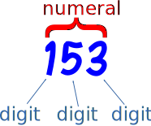
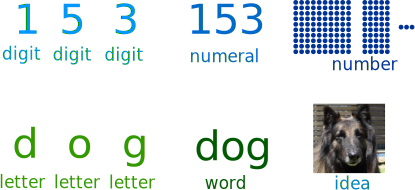

Numbers, Numerals and Digits

Number
A number is a count or measurement that is really an idea in our minds.
We write or talk about numbers using numerals such as "4" or "four".
But we could also hold up 4 fingers, or tap the ground 4 times.
These are all different ways of referring to the same number.
There are also special numbers (like π (Pi)) that can't be written exactly, but are still numbers because we know the idea behind them.
Numeral
A numeral is a symbol or name that stands for a number.
Examples: 3, 49 and twelve are all numerals.
So the number is an idea, the numeral is how we write it.

Digit
A digit is a single symbol used to make numerals.
0, 1, 2, 3, 4, 5, 6, 7, 8 and 9 are the ten digits we use in everyday numerals.
Example: The numeral 153 is made up of 3 digits ("1", "5" and "3").
Example: The numeral 46 is made up of 2 digits ("4", and "6").
Example: The numeral 9 is made up of 1 digit ("9"). So a single digit can also be a numeral
We can use other symbols too, for example hexadecimal also uses some letters!
Digits -> Numerals -> Numbers
So digits make up numerals, and numerals stand for an idea of a number.

Just like letters make up words, and words stand for an idea of the thing.
Number Instead of Numeral
But often people (including myself) say "Number" when they really should say "Numeral" ... it doesn't really matter if you do that, because other people understand you.
But try to use "digit" only when talking about the single symbols that make up numerals, OK?
Other Types of Digits and Numerals
We are all used to using numerals like "237" and "99", but the Romans used Roman Numerals, and there have been many other digits and numerals used throughout history.